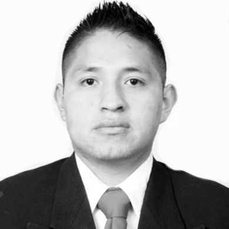

Primeros años
Me llamo Luis Eduardo y vivi la mayor parte de mi vida de niño la pase con mis abuelitos, estudie en Tlanchinol, Hgo. Después de un tiempo tuve que salir a buscar oportunidades nuevas.
Aficiones
Pues me gusta mucho el anime y trabajar, son cosas que disfruto mucho, aunque sea como una obligación, yo lo veo como una oportunidad para crecer.
En lo personal disfruto de los momentos por muy pequeños que sean, y trato de poner mi empeño y dedicación en lo que hago.